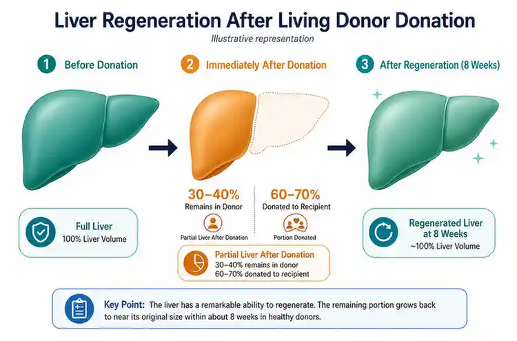

Living Donor Liver Transplant in Delhi: What Families Need to Know Before Deciding
.webp)
Principal Consultant & Unit Head, Liver Transplant & HPB Surgery, Fortis Hospital, Shalimar Bagh, Delhi

When a family is told that a loved one needs a liver transplant, the first instinct of those closest to them is often the same: I want to give them part of my liver. That impulse, generous and immediate, is also the foundation of living donor liver transplantation, the most common form of liver transplant performed in India.
But wanting to donate and being medically eligible to donate are two different things. And even when eligibility is confirmed, the decision still deserves careful thought. This guide explains how a living donor liver transplant works, who can donate, what the evaluation process involves, what the surgery looks like for both donor and recipient, and what families can realistically expect during recovery.
Why Living Donor Transplants Are So Important in India
India has one of the world's lowest deceased organ donation rates. According to data from the National Organ & Tissue Transplant Organisation (NOTTO), the country's deceased donor rate remains far below global averages. This means that for most patients in India who need a liver transplant, waiting for a deceased donor organ is not a practical option. The waiting lists at government hospitals can stretch well beyond a year, and patients with high MELD scores may not survive that long.
Living donor liver transplantation solves this problem by drawing on a willing, healthy family member. Since the liver is the only solid organ capable of full regeneration, a donor can give approximately 60 to 70 per cent of their liver, and both the donor and recipient grow back to full liver volume within 6 to 8 weeks.
In India, over 80 per cent of all liver transplants are performed using a living donor. It is the dominant model of care, and transplant programs in Delhi are highly experienced with it.
Who Can Be a Living Liver Donor?
Legal Requirements Under THOTA
Under the Transplantation of Human Organs and Tissues Act (THOTA), a living liver donor must be a near relative of the recipient. Near relatives are defined as spouse, parents, siblings, children, grandparents, and grandchildren. Family friends, neighbours, and unrelated well-wishers are not accepted as living donors under Indian law. All living donor cases must be reviewed and approved by an Authorisation Committee at the treating hospital before surgery can proceed.
Medical Eligibility Criteria
Even among near relatives, not everyone will qualify medically. The standard criteria for a living liver donor include:
- Age: 18 to 55 years. Younger donors regenerate faster; older donors carry a higher anaesthetic and surgical risk.
- Blood group compatibility: The donor's blood group must be compatible with the recipient's. ABO-compatible pairings are standard. ABO-incompatible transplants, for example A to B, are possible at specialised centres but require additional pre-operative conditioning of the recipient.
- Good general health: No significant heart disease, lung disease, kidney disease, diabetes that is uncontrolled, or active infections.
- No liver disease: The donor must have a completely healthy liver. Fatty liver above mild grade, any scarring, or abnormal liver enzymes will typically disqualify a donor.
- Adequate liver volume: The donated segment must be large enough to sustain the recipient while leaving sufficient liver volume for the donor to recover safely. This is assessed by CT volumetry.
- BMI within an acceptable range: Obesity increases surgical risk and the likelihood of fatty liver. Most programs prefer a BMI below 30.
- No history of cancer, blood-clotting disorders, or active psychiatric illness: These are assessed during the medical workup.
- Psychological readiness: Donors must voluntarily consent without coercion and demonstrate understanding of the risks. A psychiatric or psychological evaluation is part of the standard workup.
The Donor Evaluation Process
A potential donor does not simply walk in and get approved. The evaluation is thorough, structured, and takes place over several visits across 1 to 3 weeks, depending on the complexity of findings. The key steps are:
- Initial blood tests: Blood group, liver function tests, complete blood count, kidney function, viral markers including hepatitis B, hepatitis C, HIV, and coagulation profile.
- CT scan with volumetry: The single most important test. A 3D CT scan maps the liver's size, vascular anatomy, and segment volumes. It tells the surgeon exactly how much liver the donor has, how much can be safely taken, and whether the vascular anatomy is suitable for transplant.
- Cardiac and pulmonary assessment: ECG, echocardiogram, and chest X-ray to rule out undetected heart or lung disease.
- Psychological evaluation: A psychiatrist or clinical psychologist assesses voluntary decision-making, absence of coercion, and the donor's understanding of the risks involved.
- Authorisation Committee review: As mandated by THOTA, a hospital-based committee reviews the donor-recipient relationship, the donor's voluntary consent, and the medical findings before clearance is given.
If all findings are satisfactory, the donor is cleared, and surgery can be scheduled. If any single finding is borderline, the team may request further tests or may not proceed with that particular donor.
The Living Donor Surgery
In a living donor liver transplant, two simultaneous operations take place in adjacent operating theatres. The donor surgery is performed by a dedicated donor team; a completely separate team operates on the recipient. This ensures that no shortcuts are taken with donor safety due to urgency on the recipient side.
For the Donor
The donor surgery typically involves removal of the right lobe of the liver for adult-to-adult transplants or the left lateral segment for adult-to-pediatric transplants. The surgery lasts approximately 4 to 6 hours. The donor's bile duct, hepatic artery, and portal vein are carefully divided and reconstructed. No part of the donor's anatomy is permanently removed that the body cannot compensate for.
At high-volume centres, laparoscopic or robotic-assisted donor hepatectomy is increasingly performed. This reduces incision size, post-operative pain, and recovery time compared to traditional open surgery.
For the Recipient
Simultaneously, the recipient's diseased liver is removed, and the donated liver segment is implanted. Vascular and biliary reconstruction follows. The full recipient surgery lasts between 6 and 12 hours, depending on complexity. Once blood flow is restored to the new liver, the transplant team immediately monitors for signs of graft function.
Donor Recovery: What to Expect
| Timeline | What the Donor Can Expect |
|---|---|
| Days 1 to 3 | ICU or close observation ward, pain managed with IV medications, IV fluids, and monitoring of liver function daily. |
| Days 3 to 7 | Transfer to ward if stable, transition to oral medications, initial mobilisation with physiotherapy support. |
| Day 7 to 10 | Discharge from the hospital if liver function is recovering well and there are no complications. |
| Weeks 2 to 4 | Light activity at home, an outpatient follow-up visit, and blood tests to confirm liver regeneration. |
| Weeks 4 to 6 | Return to desk work and driving, continued avoidance of heavy lifting. |
| Months 2 to 3 | Full return to physical activity, liver volume restored to normal, follow-up imaging to confirm complete regeneration. |
The vast majority of donors return to full normal health and activity within 6 to 8 weeks. Long-term outcomes for liver donors are excellent. Studies consistently show that the long-term liver function, quality of life, and life expectancy of liver donors are not significantly different from those of the general population when donors are properly selected.
Risks for the Donor: Honest Answers
Living liver donation carries real risks, and any transplant program that minimises these risks is not being transparent. The most common complications include:
- Wound infection or hernia, approximately 5 to 10 per cent of cases.
- Bile leak from the cut edge of the liver, approximately 5 to 8 per cent, usually resolves without surgery.
- Temporary liver insufficiency during the regeneration phase, which is rare at well-selected centres.
- Rare but serious complications such as major bleeding, bile duct injury requiring reconstruction, and prolonged liver failure.
At experienced high-volume transplant centres, the risk of donor mortality is estimated at approximately 0.1 to 0.5 per cent for right lobe donation. This is the figure that is frankly disclosed to every potential donor during the consent process. No donor should proceed without fully understanding and accepting this risk.
This is also why the donor evaluation process is so thorough. The goal is not to find a reason to reject donors, but to select donors for whom the risk-benefit balance is genuinely favourable.
Frequently Asked Questions
Can my spouse donate part of their liver to me?
Yes. A spouse is explicitly recognised as a near relative under THOTA and can donate, provided they meet the medical eligibility criteria and pass the Authorisation Committee review.
Can I donate to a non-family member in India?
Under THOTA, liver donation to someone who is not a near relative requires approval from a Government Authorisation Committee, not just a hospital committee. These cases are assessed individually and require extensive documentation to rule out commercial transactions. Altruistic donation to strangers is technically possible but involves a longer and more complex approval process.
Does the donor receive any financial compensation?
No. Organ donation for commercial gain is illegal under Indian law. The recipient is expected to cover the donor's surgery, hospitalisation, and follow-up costs as part of the overall transplant package. Separate compensation beyond these medical costs is prohibited.
What happens to the donor if their liver segment does not regenerate properly?
This is rare in properly selected donors. In the event of insufficient regeneration, the treating team manages the donor medically, and in the extremely unlikely scenario of donor liver failure, emergency measures, including potential listing for a deceased donor liver, can be initiated. This is why the pre-operative CT volumetry and donor selection process are so thorough.
Can a donor with a slightly elevated BMI still donate?
It depends on the degree of elevation and whether there is associated fatty liver. Mild overweight, with BMI 25 to 30, with a completely normal liver on CT and normal liver function tests may still allow donation at many centres. A BMI above 30 with any degree of fatty liver change on imaging is typically a disqualifying combination.
Considering Liver Donation? Start Here
If a family member has been advised of a liver transplant and you are considering whether you could be a donor, the first step is a confidential consultation to assess your initial eligibility. This involves nothing more than a conversation and basic blood tests at the first visit.
Book an appointment with Dr Ashish George at Fortis Hospital, Shalimar Bagh. Call +91 93101 39800 or visit liversurgeons.com/contact. You can also book via the Fortis Healthcare website.
Donation is a profound decision. Make it informed.